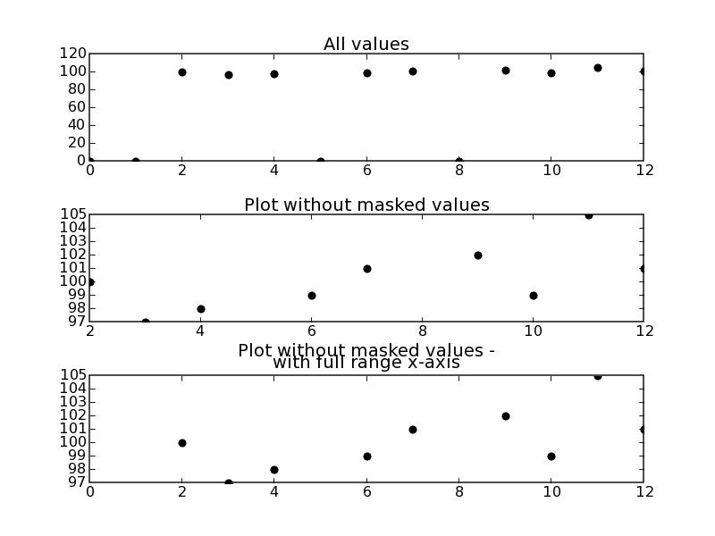

From time to time one might end up with “meaningless” data in an array. Be it because a detector didn’t work properly or for an other reason. Or one has to deal with data in completely different ranges. In both cases plotting all values will screw up the plot. This brief example script addresses this problem and show one possible solution using masked arrays. See ‘masked_demo.py’ in the matplotlib examples for a reference, too.
import numpy as np
import matplotlib.pyplot as plt
y_values = [0,0,100,97,98,0,99,101,0,102,99,105,101]
x_values = [0,1,2,3,4,5,6,7,8,9,10,11,12]
#give a threshold
threshold = 1
#prepare for masking arrays - 'conventional' arrays won't do it
y_values = np.ma.array(y_values)
#mask values below a certain threshold
y_values_masked = np.ma.masked_where(y_values < threshold , y_values)
#plot all data
plt.subplots_adjust(hspace=0.5)
plt.subplot(311)
plt.plot(x_values, y_values,'ko')
plt.title('All values')
plt.subplot(312)
plt.plot(x_values, y_values_masked,'ko')
plt.title('Plot without masked values')
ax = plt.subplot(313)
ax.plot(x_values, y_values_masked,'ko')
#for otherwise the range of x_values gets truncated:
ax.set_xlim(x_values[0], x_values[-1])
plt.title('Plot without masked values -\nwith full range x-axis')
savefig('masked_test.png')
The resulting figure might illustrate the problem - note the different scales
in
all
three
subplots:
CategoryCookbookMatplotlib